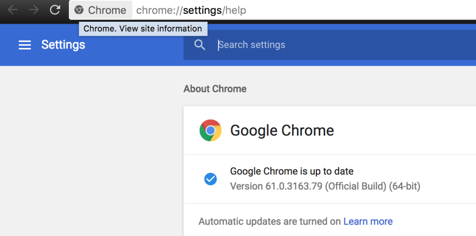

We will need a bunch of tools for the course. The easiest way to get them all is to rely on a package manager.
The package manager is built-in, you should know how to use it.
Chrome will be our default browser.
Using our packages managers (Win, Mac)
\# Windows
C:\\\> choco install googlechrome
\# Mac
brew cask install google-chromeIf you already have it, make sure you have the latest version.

Atom is an open-source text editor with many helpful plugins. https://atom.io/
\# Windows
C:\\\> choco install atom
\# Mac
brew cask install atomI recommend to install the following ones (directly from the editor under packages)
atom-beautify, atom-ternjs, autoclose-html, pigments, advanced-open-fileGit is a free and open source distributed version control system designed to handle everything from small to very large projects with speed and efficiency. It is similar to a Google Docs or Shared Dropbox folder for your code (and your peers).
You will use it extensively for this course. So to get started, the first steps are:
Creating a Github account (if you don't have one)
\# Windows
C:\\\> choco install github
\# Mac
brew install git
brew cask install github-desktopFollow 2 tutorials on how to use Git
If you want to have a good looking terminal (instead of the default ugly one), I suggest you install ConsoleZ on Windows and Oh-my-zsh on mac.
Mac users: read this tutorial
Windows users:
C:\\\> choco install ConsoleZhttps://github.com/cbucher/console
You can now create a "labs" folder that you will push on your Github account. All the code for your labs can go in this folder.